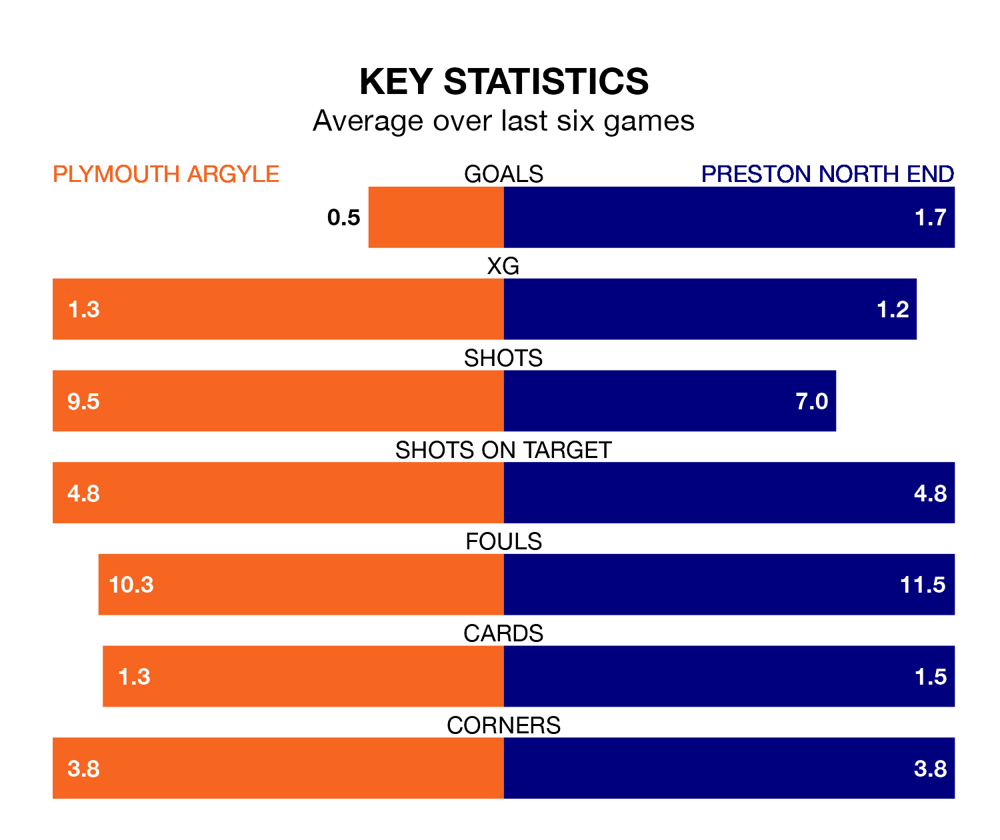

Plymouth Argyle are on a poor run ahead of hosting Preston North End at Home Park on Saturday, with just four points collected from their last six games.
The Pilgrims have picked up one win and one draw in their last six EFL Championship games, and face a Lilywhites side whose last six games have brought three wins and two draws.
In Morgan Whittaker, Plymouth have one of the league's sharpest shooters so far this season. He has notched 18 goals in 37 appearances, to sit second in the scoring charts.
His goal rate of one every 176 minutes is slightly quicker than that of Will Keane, Preston's top scorer with a goal every 152 minutes, and a total of 12 goals in 28 games.
With 54 goals in 37 games so far this season, Argyle are scoring more than average in the league with 1.5 goals per game. But they are conceding more than average too, letting in 61 goals at a rate of 1.6 per game.
North End, meanwhile, are below average scorers, with 1.3 goals per game, compared to a league average of 1.4. They have conceded 1.5 goals per game.
The Pilgrims are 17th in the table after 37 games, of which they have won 10 and drawn 11, earning 41 points.
The Lilywhites are six places ahead of the hosts in 11th, with 15 wins and eight draws putting them on 53 points.
Plymouth's last match was on March 9, a 1-1 draw against Blackburn Rovers, with Whittaker getting the goal for the Pilgrims.
Preston lost 2-1 against Stoke City last time out, also on March 9, with Milutin Osmajić on the scoresheet.
Saturday's match will be refereed by John Busby, who has taken charge of 19 EFL Championship games so far this season, issuing one red card and booking 80 players. He has awarded four penalties.
The last Plymouth game Busby refereed was a 2-1 away loss to Birmingham City on August 26. His last Preston match was their 1-1 draw away at Millwall on January 27.
Updated: 15:10 (UTC), 15/03/24